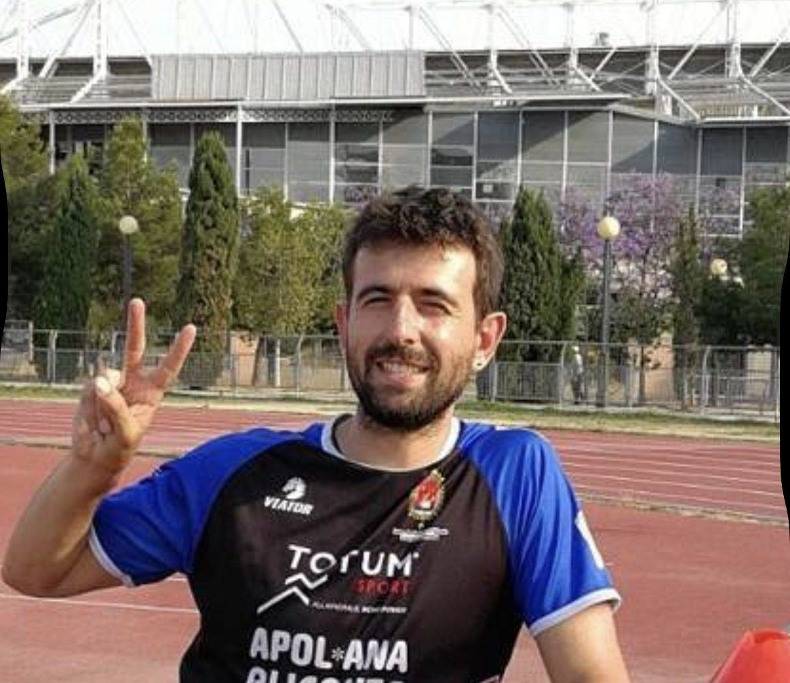
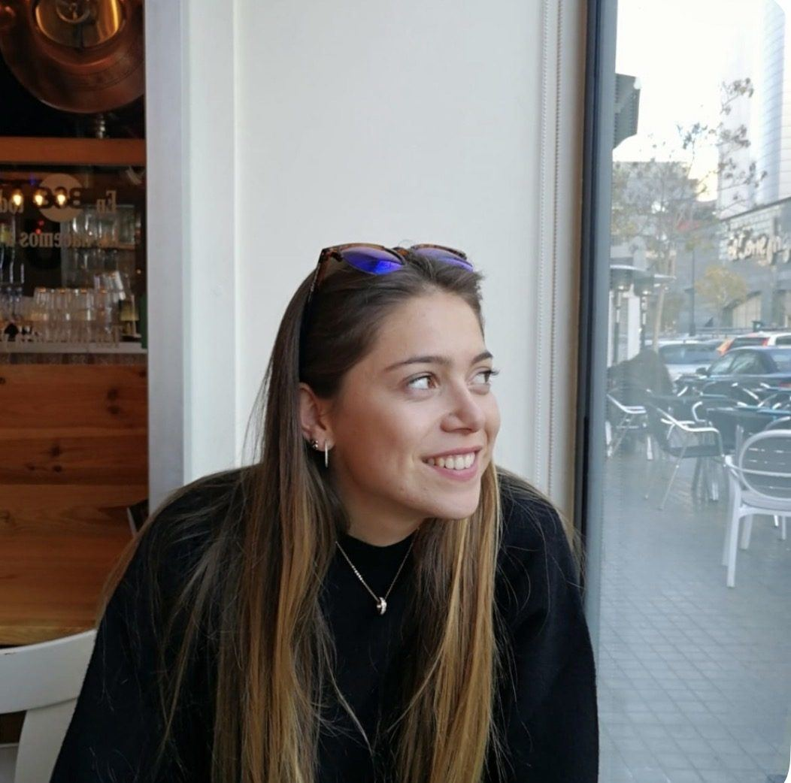
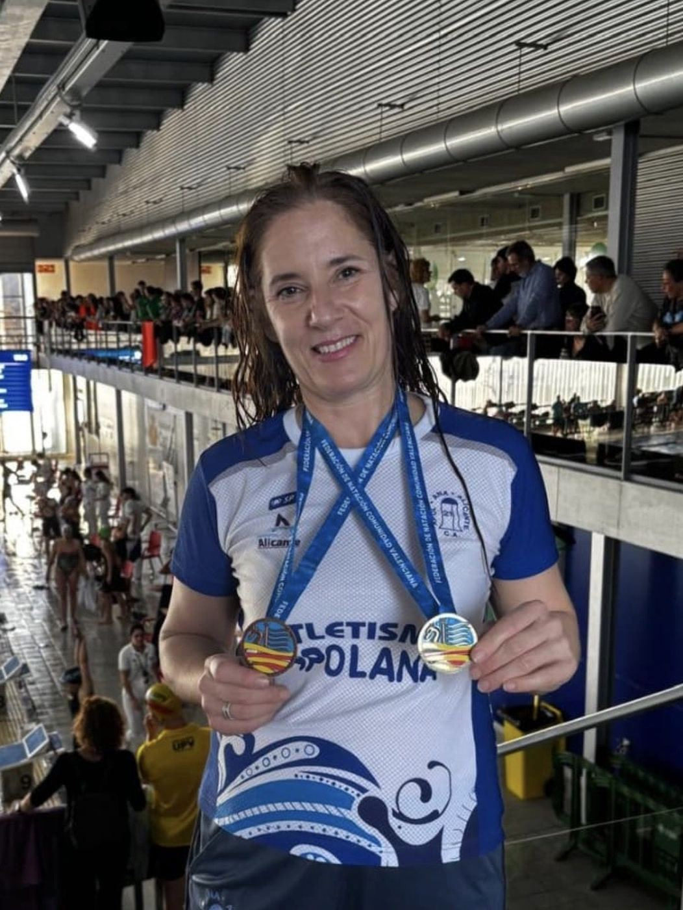
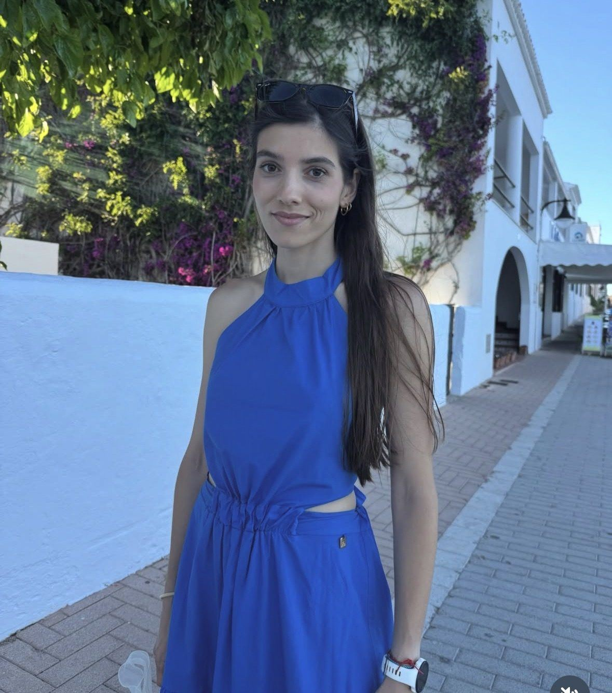

Desde 1988 en Alicante
Un club de
Un club de
socios
420 atletas en siete secciones, de la psicomotricidad a la alta competición. Sin accionistas y sin fichajes: lo que entra se reinvierte en entrenadores, material y en la escuela.

1988Año de fundación
420Atletas esta temporada
7Secciones deportivas
64Medallas autonómicas
Junta directiva
Mandato 2025-2029 · junta@atletismoapolana.com
Miguel Á. PellínVicepresidente
Mario ClaveroSecretario





Enrique GallegoDir. Montaña
José FernándezDir. Triatlón